IPTVUS24 · Spatial cinema
Depth you can feel.
Two distinct atmospheres.
Perspective-framed visuals, floating glass and device layers, soft volumetric light, edge reflections, and physically inspired shadows. Night brings blue/violet cinema lighting; day brings pearl-white glass and soft blue bloom.


Presentation only. No invented social proof.
Existing business copy, prices, and original imagery retained. Decorative phone and playback layers are abstract visual concepts, not application screenshots. Reduced motion is enabled in captures. Reviews show the actual unavailable backend state in this sandbox.
01 — Three planes of cinema

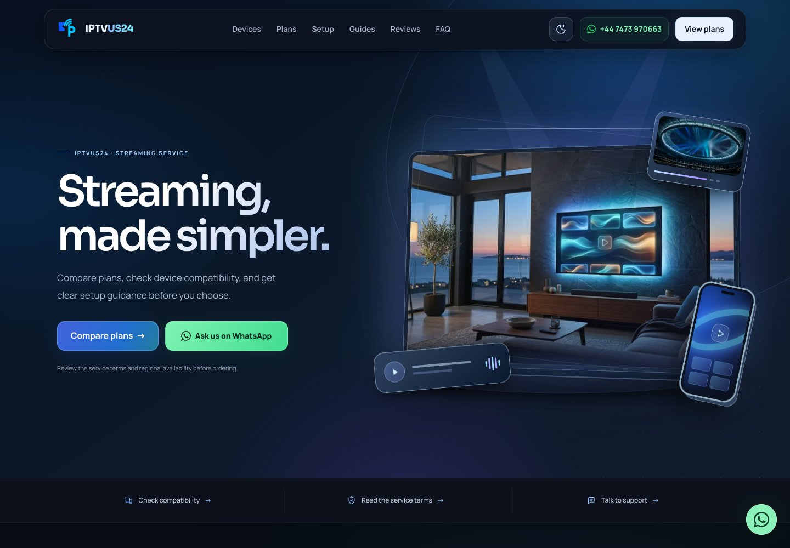

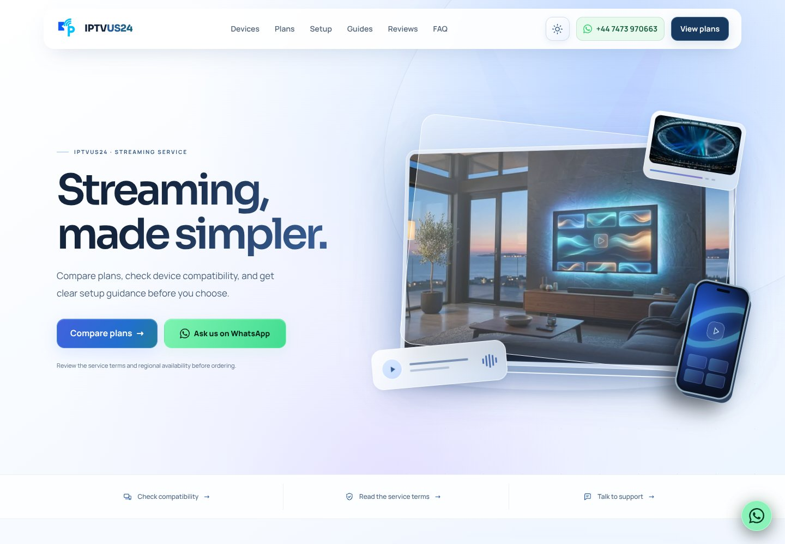


02 — An elevated device ecosystem

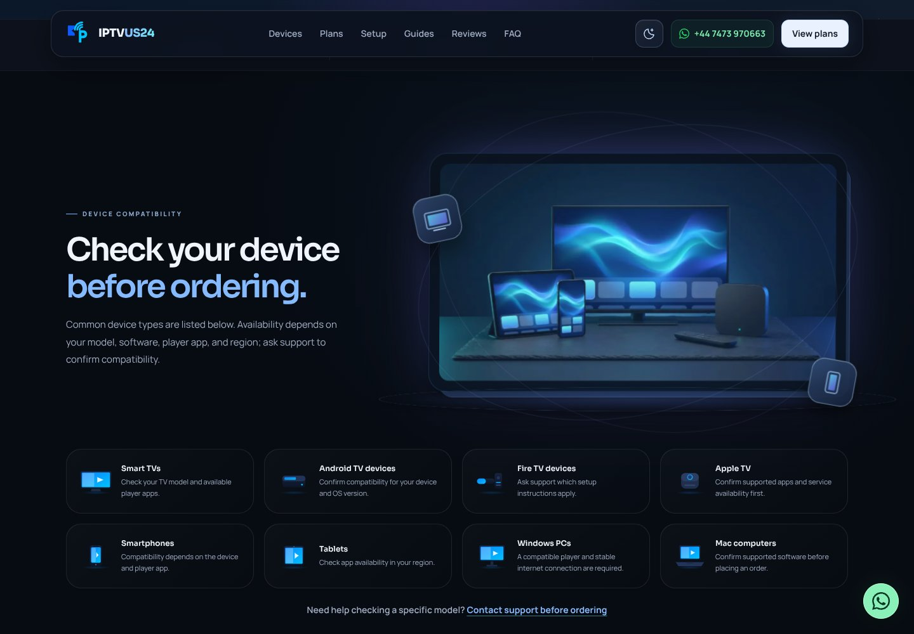

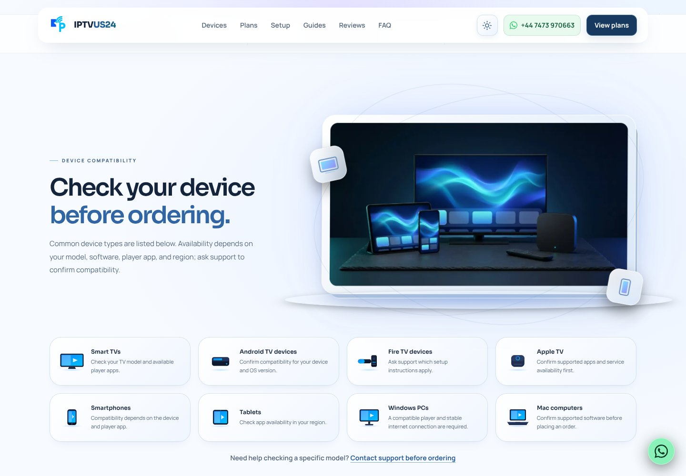
Mobile: night / day

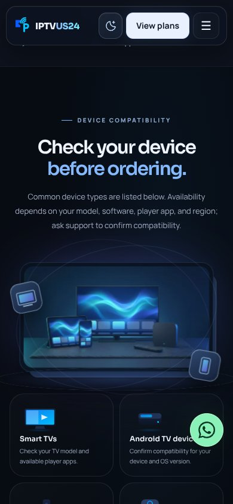

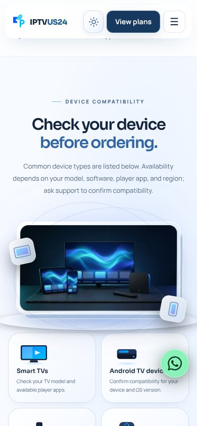
03 — Layered pricing materials

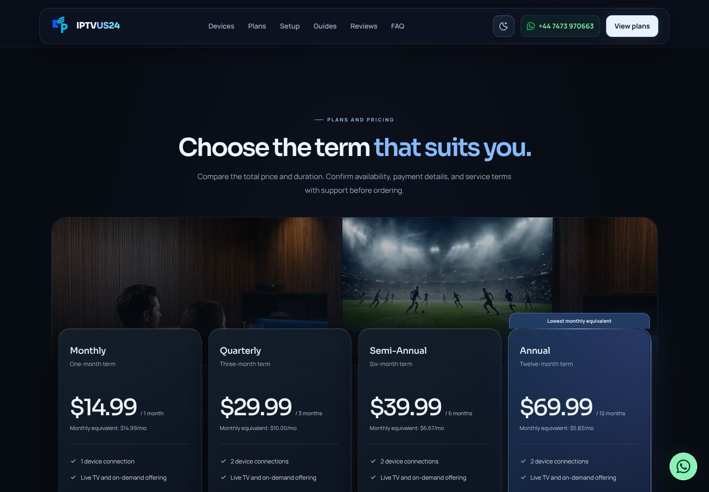

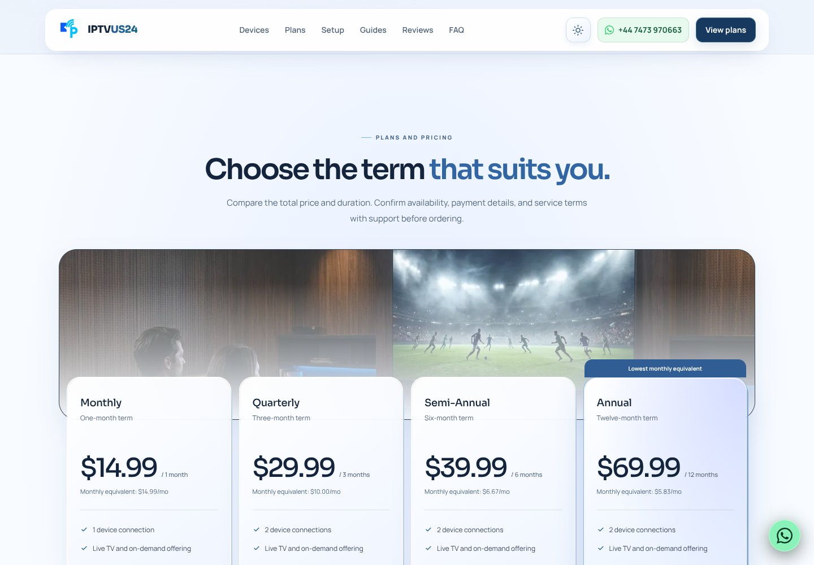


04 — Light, depth, and legibility

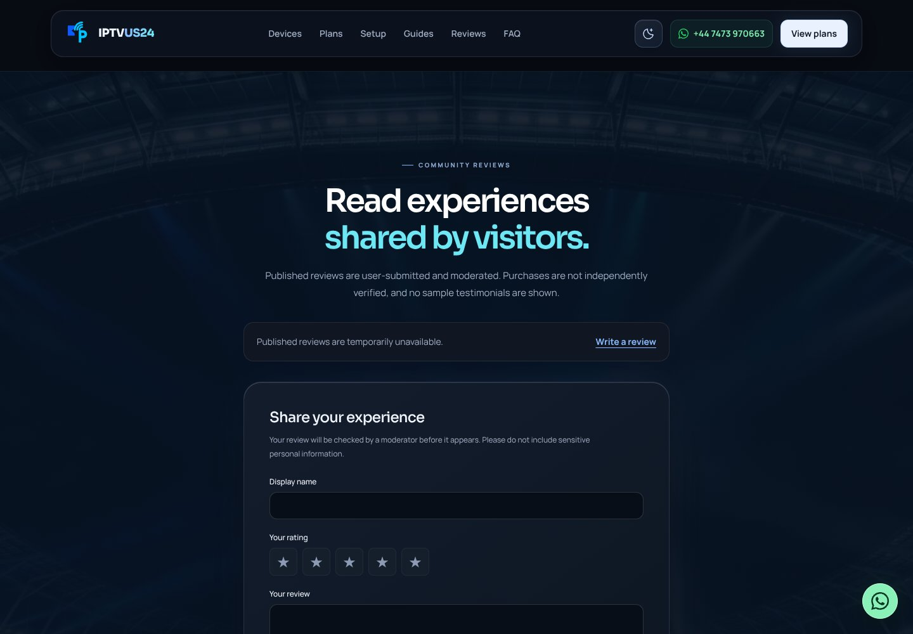

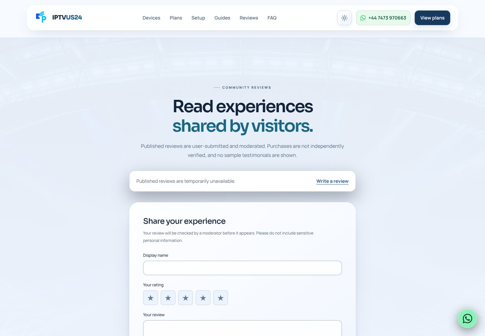


05 — Floating contact panels


Supporting pages share the atmosphere
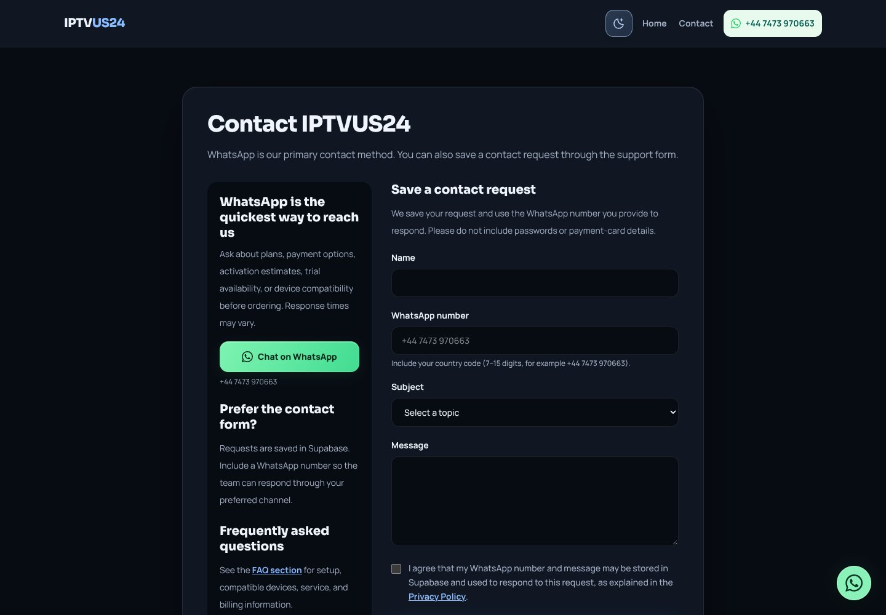
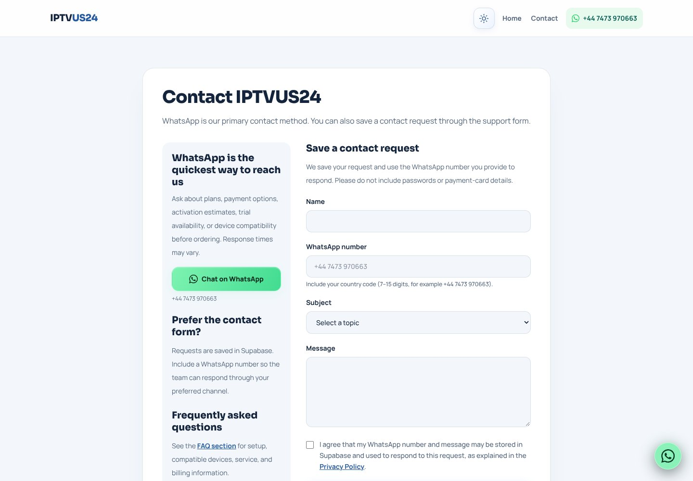